gallery
neural style transfer
Here are some images made with neural style transfer. I wrote a simple python script called unstop that applies the style from one image onto another. You can read more about how the python script works here.
These images are just a sample, please ignore the awkward grid. I am still looking into the best way of generating and organizing this page.
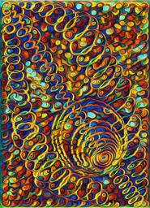 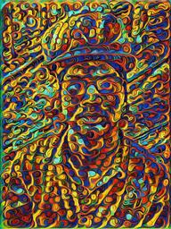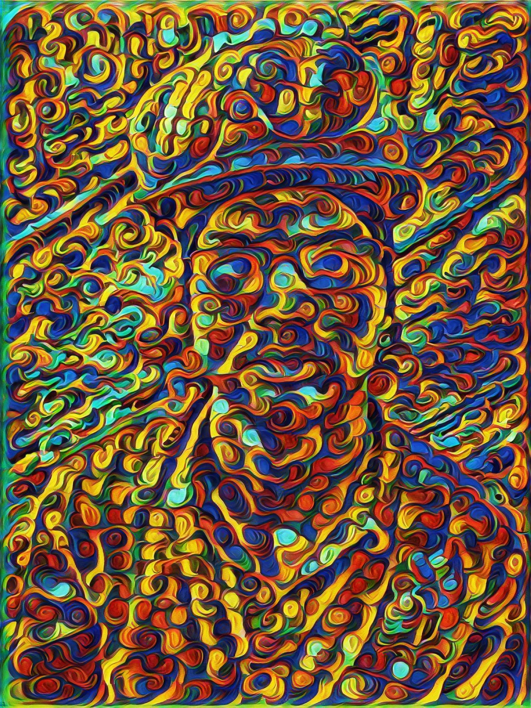 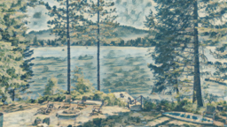 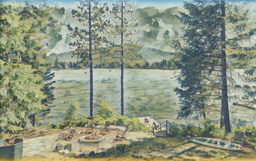
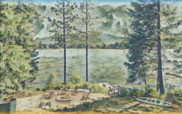 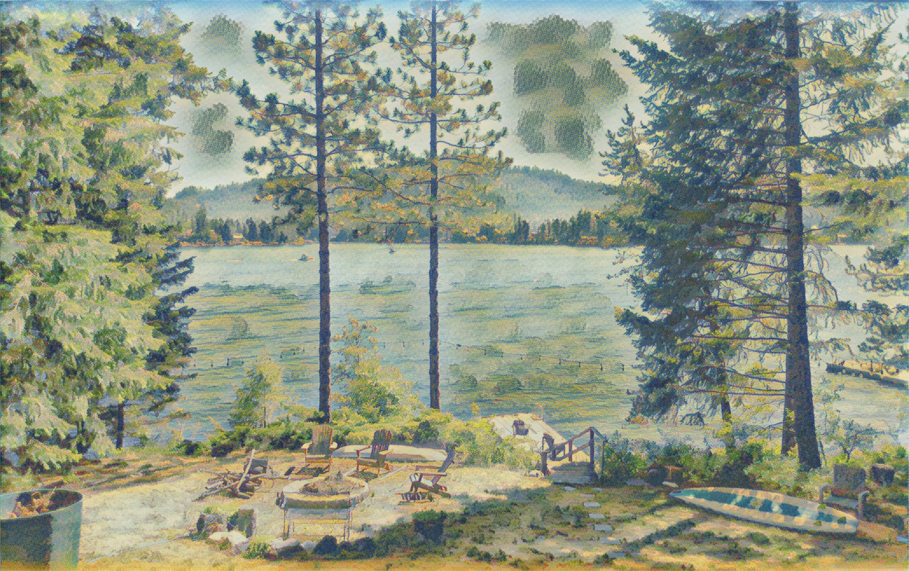 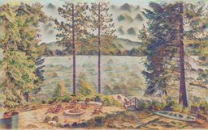 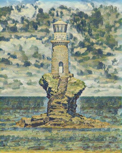 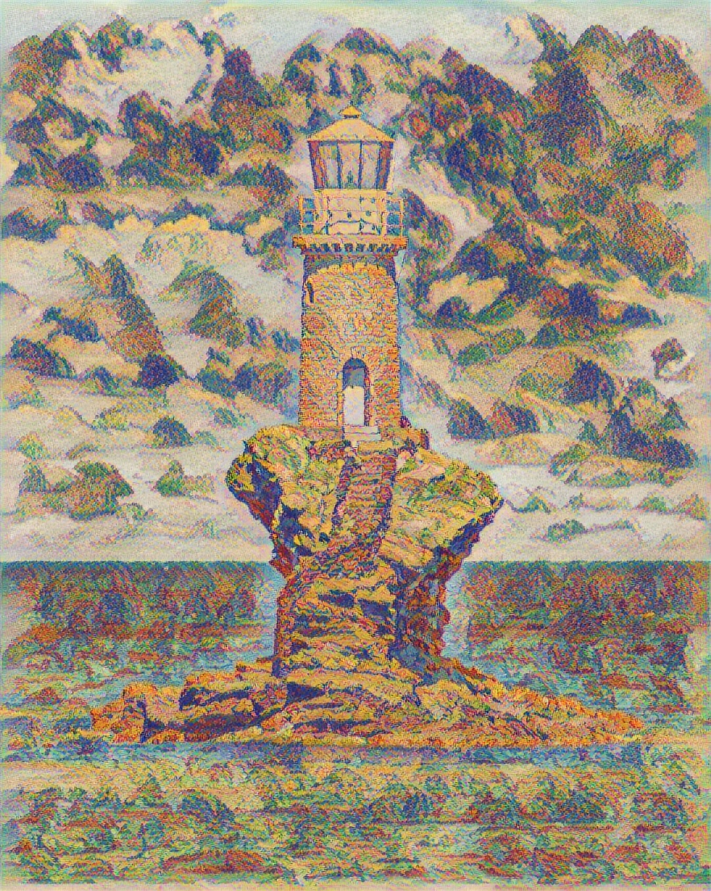 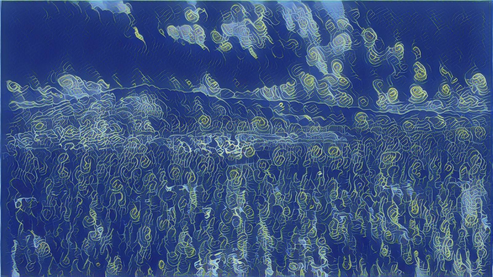 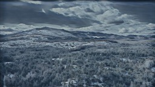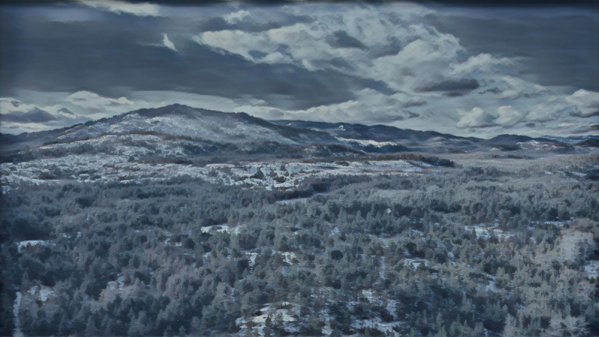 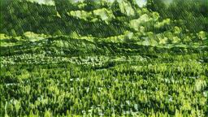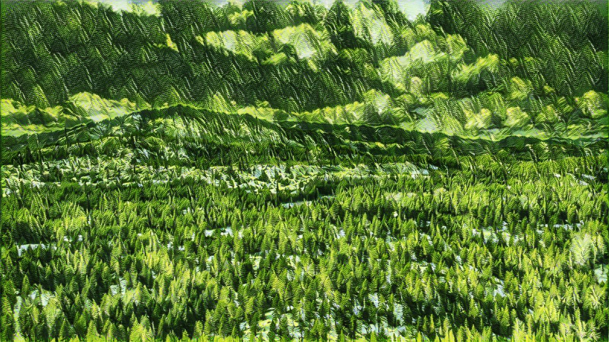 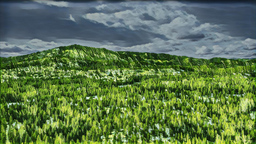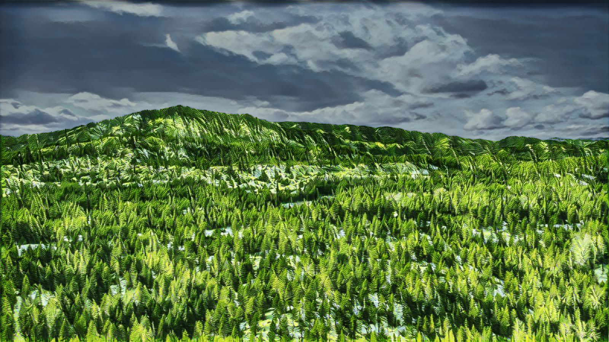
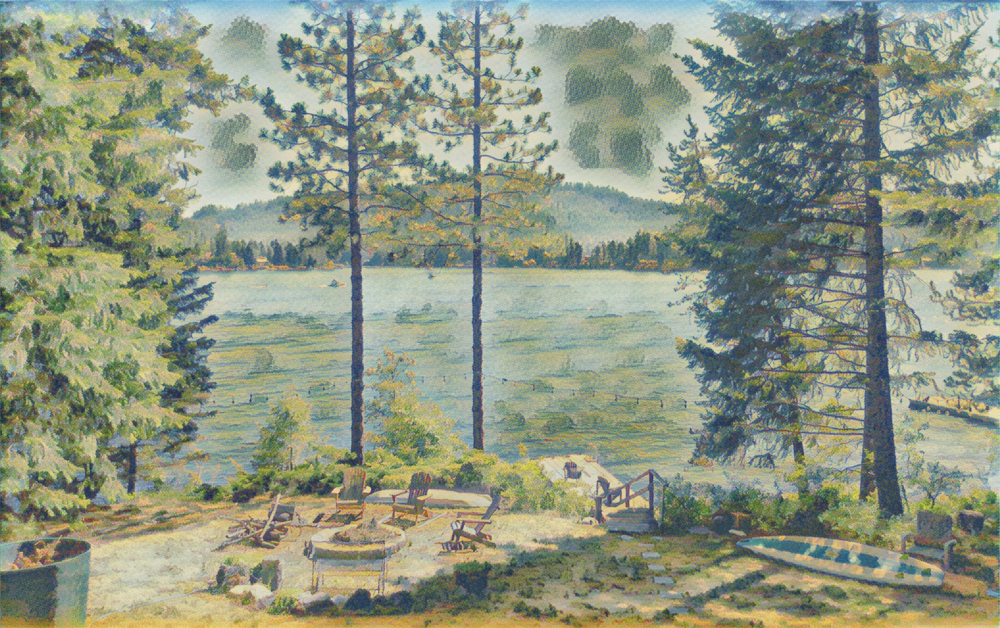 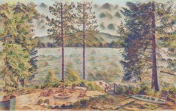 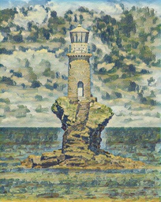 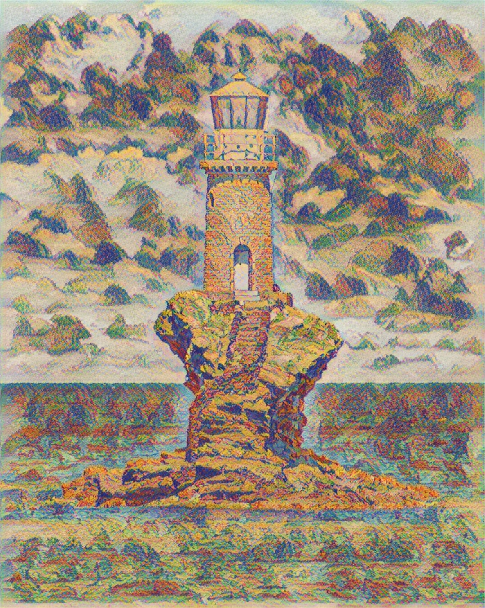 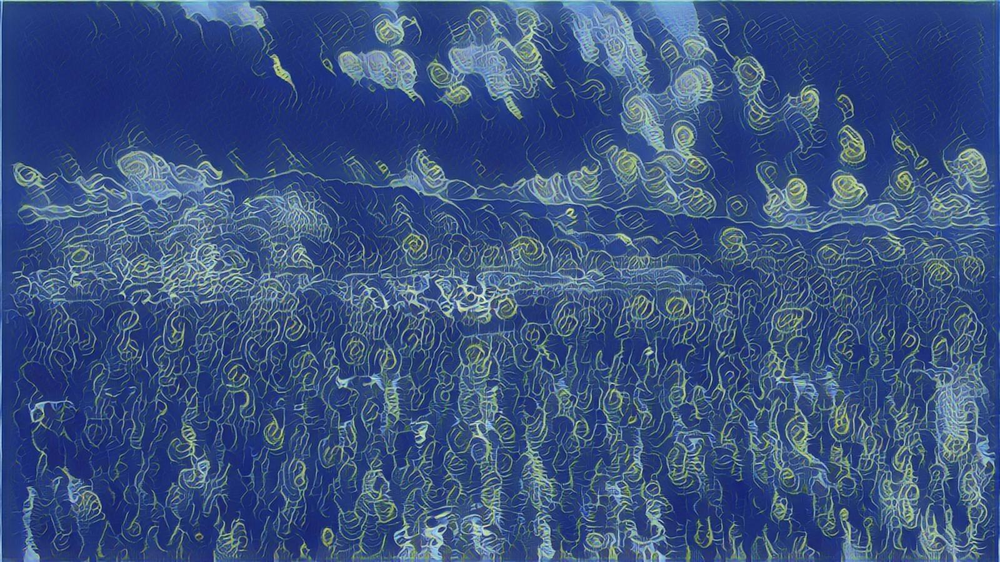 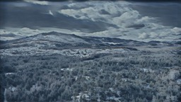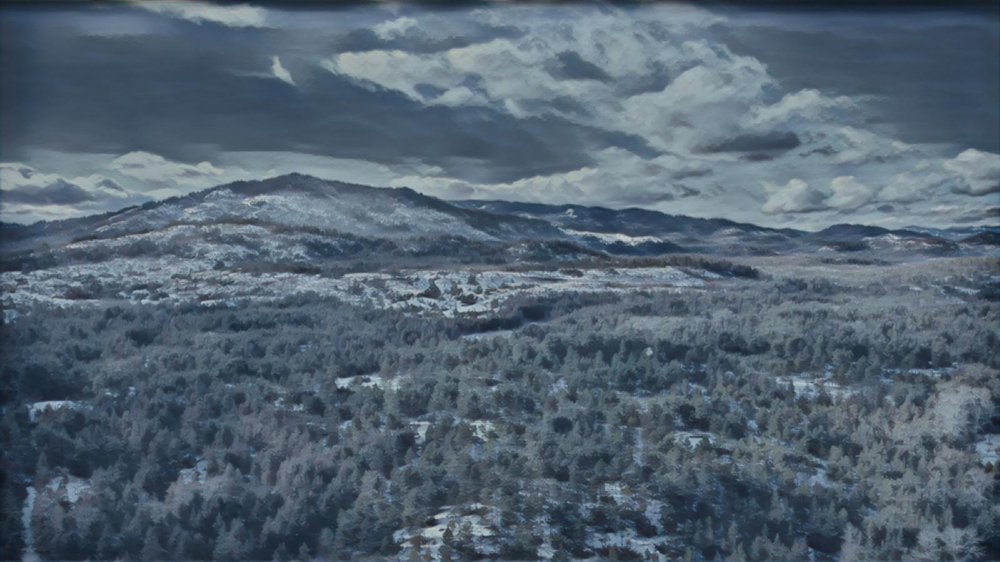 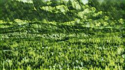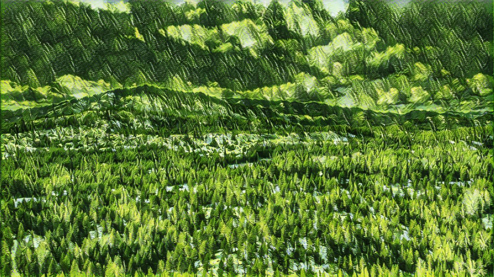 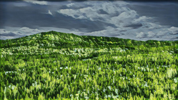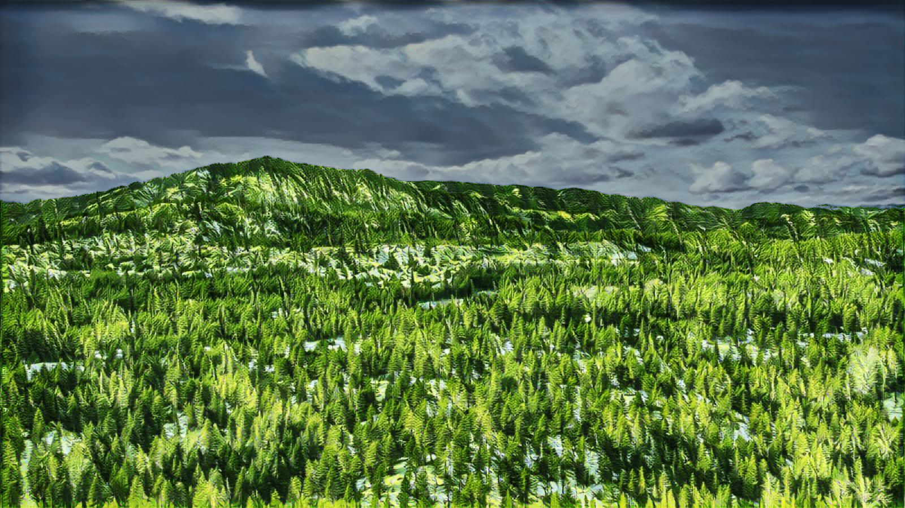